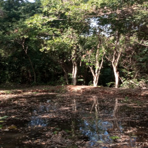
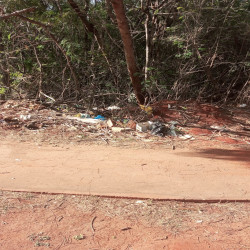
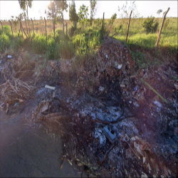

Caminhada Ecológica e visitação ao Horto Imbirussu
Vamos falar sobre:
Os impactos ambientais identificados durante a caminhada ecológica;
Formas para solucionar os problemas ambientais;
Principais impactos ambientais identificados em trecho do Parque Linear do Imbirussu e região:
Poluição da água
Poluição do Ar
Descarte inadequado dos lixos


Leito do Córrego Imbirussu Poluído. Fotografia de Ana Beatriz, 2º ano C

Lixo jogado a céu aberto em área isolada. Fonte: Google Street View
Formas para solucionar tais problemas:
Implementação de Programas de Reciclagem
Educação Ambiental
Desenvolvimento de Infraestrutura de Gestão de Resíduos
Incentivos para a Compostagem Doméstica
Políticas de Redução de Plásticos de Uso Único
Três fatores para o equilibrio do ecossistema:
Manutenção da biodiversidade dos Ecossistemas
O correto equilíbrio dos Ciclos Biogeoquímicos na natureza
Estabilidade nas Interações Ecológicas naturais e sobre a influência Humana
Tecnologias utilizadas para o desenvolvimento deste site:
Deixando claro que este site foi desenvolvido para um trabalho escolar, caso haja algum erro, dúvida ou crítica a fazer, entrar em contato no Instagram.
Também pode ocorrer bugs em usuários mobile, recomendo que veja em uma tela de computador.